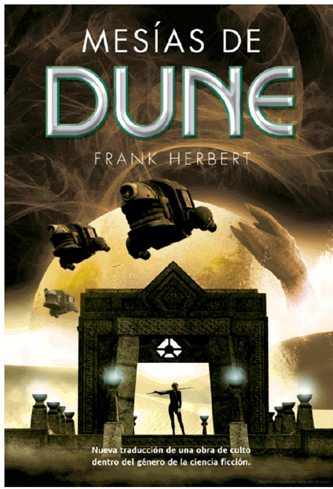

Dune (1965)
Autor: Frank Herbert Sinopsis: En un futuro lejano, en un universo dominado por casas nobles, intrigas políticas y la misteriosa especia melange, la historia sigue a Paul Atreides, el joven heredero de la Casa Atreides, en su viaje
para reclamar el control del planeta desértico Arrakis. "Dune" es una epopeya de ciencia ficción que explora temas de poder, religión, ecología y la lucha por el control en un universo vasto y complejo.
El mesías de Dune (1969)
Sinopsis: Ambientada varios años después de los eventos de "Dune", esta secuela sigue a Paul Atreides en su papel de Mesías del pueblo fremen y líder del Imperio conocido como Muad'Dib. Mientras lucha por mantener el equilibrio
entre las facciones políticas y religiosas que buscan su favor, Paul se enfrenta a desafíos tanto internos como externos que amenazan con desestabilizar el orden que ha tratado de construir.
Hijos de Dune (1976)
Sinopsis: En esta tercera entrega de la serie, la historia se centra en los hijos de Paul Atreides: Leto II y Ghanima, quienes heredan el legado y las responsabilidades de su padre. A medida que luchan por mantener el equilibrio
entre la humanidad y la tiranía, enfrentan conspiraciones, traiciones y el peso de su destino profético.
Dios emperador de Dune (1981)
Sinopsis: Ambientada milenios después de los eventos de las primeras tres novelas, esta entrega sigue al tiránico Dios Emperador Leto II, quien ha gobernado el universo durante miles de años. Con un control absoluto sobre la humanidad,
Leto se enfrenta a desafíos existenciales y busca asegurar el futuro de la especie humana a cualquier costo.
Herejes de Dune (1984)
Sinopsis: En esta quinta entrega de la serie, la trama se centra en la lucha por el poder y la supervivencia en un universo en constante cambio. Las facciones políticas y religiosas se enfrentan mientras la humanidad lucha por
adaptarse a nuevos desafíos y amenazas. La historia explora temas de evolución, identidad y resistencia.
Casa Capitular Dune (1985)
Sinopsis: Esta sexta entrega de la serie "Dune" sigue la historia de las Casas Mayores y Menores en el universo conocido por la franquicia. Explora las complejidades de la política intergaláctica, las intrigas familiares y las
conspiraciones mientras las diversas facciones luchan por el poder y la supervivencia en un mundo cambiante y peligroso.